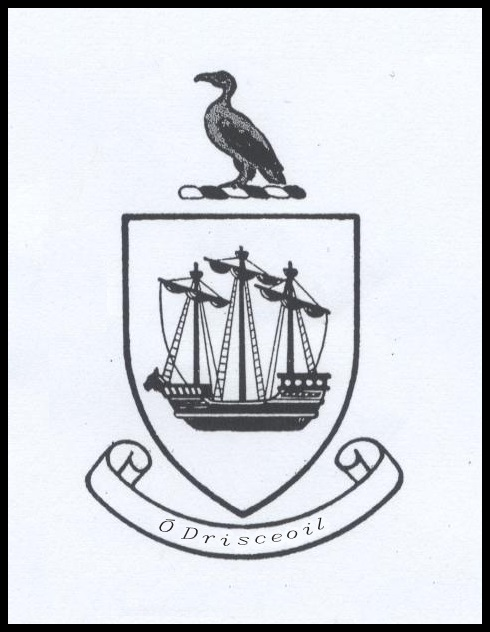

Ó Drisceoil O Driscoll
The O Driscolol crest has a black (sable) galley on a white (argent) background. The galley represents the O Driscoll maritime power, while the furled represents constancy. The cormorant overhead is the emblem of Charity, while the white background signifies Peace and Sincerity..
The O Driscoll Clan is an organisation registered with The Clans of Ireland, the Irish Government Registering Authority. The Annual Clan Gathering of people named Ó Drisceoil / O Driscoll has been held at Baltimore, County Cork, Ireland since 1986. Events take place at Baltimore Village and Castle and on the nearby islands, Cape Clear, Heir and Sherkin. The O Driscoll Memorial Archive and O Driscoll Annual Remembrance Ceremony at Cape Clear Island Museum are voluntary initiatives dedicated to remembering all O Driscolls, past and present, and feature prominently on the annual programme of events at the Clan Gathering.
First O Driscoll Clan Rally / Gathering 1961 – beneath the then ruin of Dún na Séad, O Driscoll Castle, Baltimore, Co. Cork.
Attending an O Driscoll Clan Gathering weekend at the end of June each year is a significant experience for all who bear any form of the name - Ó Drisceoil, O Driscoll, Driskell or Driskill. People with these and other forms of the O Driscoll surname around the world most likely have their ancestral connections, stretching back over several centuries to a specific part of County Cork, Ireland. Clann Ó Drisceoil, or the O Driscoll Clan, have, for some 1,500 years, been anchored in the ancient district of Corcu Loígde, now known as Carbery, in West Cork. Today the area around Baltimore and the islands of Cape Clear, Heir and Sherkin is accepted as being the heart of the ancestral homeland of the worldwide O Driscoll family. For Map of O Drisceoil / O Driscoll held lands c. 1600 Click here

Restored Dún na Séad, Baltimore Castle
A successful Clan Gathering of the O Driscolls took place at Baltimore in 1961, and was revived some twenty-five years later, in 1986, going on to become, yearly since then, a four-day event, taking place during the last weekend of June. It is during this gathering that clan members choose their chieftain, who coordinates the affairs of the clan and hosts their ceremonial events for a period of two years. As the choosing of the modern-day O Driscoll Chieftain is not based on historical descent, any person descended from someone who bore the name Ó Drisceoil / Driscoll is eligible to be chosen and to hold office for two years.